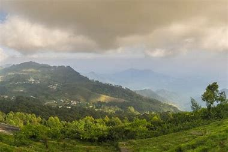

The Palani Hills are a mountain range in the southern Indian states of Kerala and Tamil Nadu. The
Palani Hills are an eastward extension of the Western Ghats ranges, which run parallel to the west
coast of India. The Palani Hills adjoin the high Anamalai range (Kerala) on the west, and extend
east into the plains of Tamil Nadu, covering an area of 2,068 square kilometres (798 sq mi). The
highest part of the range is in the southwest, and reaches 1,800-2,500 metres (5,906-8,202 feet)
elevation; the eastern extension of the range is made up of hills 1,000-1,500 m (3,281-4,921 ft)
high.
It is also home to the main temple of Lord Muruga, who is worshipped as the primary god in Tamil
Nadu.
Vandaravu peak is the highest peak in the Palani hills. The range lies between the Cumbum Valley on
the south, which is drained by the Vaigai River and its upper tributaries, and the Kongunadu region
to the north. The northern slopes are drained by the Shanmukha River, Nanganji River, and Kodavanar
River, which are tributaries of the Kaveri River. The range lies mostly within Dindigul district,
except in the western portion, where it forms the boundary between Dindigul district and Theni
district to the south and Idukki District to the south west.
Palani Hills
| Palani Hills | |
|---|---|
|  | |
| Highest Point | |
| Elevation | 2,533 m (8,310 ft) |
| Length | 65 kilometres (40 mi) |
| Coordinates | 10°12′N 77°28′E |
| Geography | |
| Location | Tamil Nadu, India |
| Borders on | Tamil Nadu |